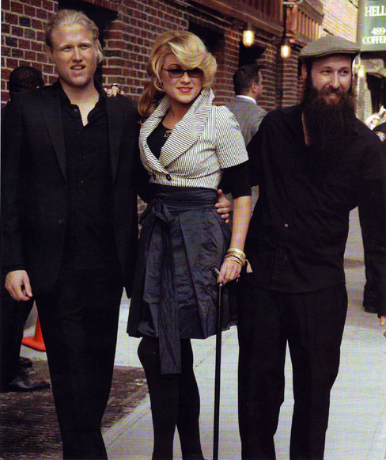
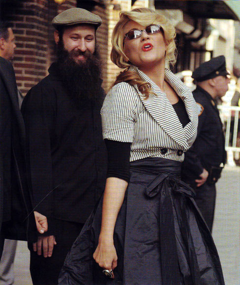
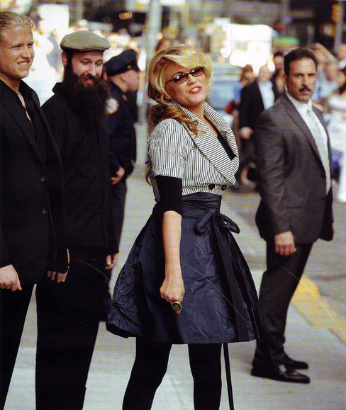

Мелъди Гардо
Мелъди Гардо
И Мюзикълът „Ах, този джаз!", класическият шедьовър на Боб Фос, завършва трагично. С отрезвяващото прозрение за човешката тленност. Историята на Мелъди Гардо е пълна противоположност на героя на Рой Шайдер - Джо Гидиън. За Мелъди, красавицата от Пенсилвания, илюзиите и животът едва не свършват, когато навършва 19 години. Тя остава парализирана от кръста надолу и е с тежка форма на аномия. Налага се да започне да се учи отново да говори. Отново да ходи като малко дете. Проблемите с паметта и езика изглеждат непреодолими. Но тъкмо дългият път към възстановяването слага началото на музикалната кариера на Мелъди Гардо. Ако филмът „Ах, този джаз!" имаше римейк, няма по-подходяща история от съдбата на Мелъди Гардо. Затова озаглавих този текст „Ех, този джаз!" Спуснете пердетата и запалете свещите. Ще последва трогателна, прочувствена порция живот и джаз... Мелъди Гардо е уникално явление в музиката. Още с първия си албум Worrisome Heart тя вдига високо летвата в дисциплината, която самата наложи - музикална атлетика. Само преди два месеца се появява и вторият й албум, с който вече я поставят на един пиедестал с Били Холидей, Ела Фицджералд и Нина Симон заради способността й да улови в песните си едновременно настроението и емоцията. В класиката на Боб Фос героят Джо Гидиън в крайна сметка осъзнава своята тленност на 40 години напук на измамната жизненост, която черпи от секса, наркотиците и магията на танца. 40 според Библията е числото на очакването, на подготовката, на изпитанието за наказанието. Светото писание често се обръща към числото 40, когато започва нова глаба в историята на Спасението. От друга страна, цифрата 40 отбелязва продължителността на активността на едно поколение. И не на последно място 40 изразява собствената физическа смърт и духовното възкресение. „Винаги съм се чувствала много по-възрастна - признава Мелъди. - Още когато бях на 8 години, си казвах, че съм на 40. За мен имаше нещо вълшебно в тази цифра." Май всеки е белязан от съдбата си.
„Завърших колеж преждевременно и бях принудена да завърша и училището на съдбата" - споделя Мелъди Гардо. Тя не се шегува. като студентка в Мооге Соllege of Art and Design във Филаделфия Мелъди се подготвя за кариера на моден дизайнер. За да плаща учението си, работи като пианистка в нощен бар. Една нощ, докато се връща у дома с колелото си, е пометена от джип. „В този миг целият свят се сгромоляса около мен. Била съм само на косъм от смъртта" -споделя Мелъди. Близо година прекарва в болница. Лекува счупен таз и тежки наранявания на гръбначния стълб и главата. Мелъди е жив труп. Не може нито да се движи, нито да говори. Амнезията й за разлика от латиносапунените

Мелъди Гардо преди Шоуто на Дейвид Летърман. Ню Йорк, 1 юни 2009
сериали е истинска и страховита. Когато влиза в банята, не знае какво трябва да прави и 45 минути се опитва да си припомни, докато накрая се сеща, че трябва да си сложи шампоан. На професионален език състоянието й се нарича аномия (nominal aphazia) -мозъкът работи, но устата остава безмълвна, защото думите така и не идват. „Все едно си кукла с много лош кукловод" - шегува се Гардо съвсем наскоро в интервю за лондонското Jazz FM радио, формулирането на едно най-просто изречение й отнема минимум 20 минути. За щастие в болницата попада на лекар, занимаващ се активно с когнитивна терапия. Един ден д-р Джудит Мастерсън виждайки, че Мелъди е унила и умърлушена, я пита: „С какво си се занимавала в детството? Искам да те направя отново щастлива!" Мелъди не може да реагира, защото за детството й в мозъка има само бяло петно. Тогава майка й се намесва и казва: „Много обичаше да свири на пиано." „Чудесно! Ще опитаме лечение с музика!" - заявява д-р Мастерсьн. Музикалната терапия трябва да помогне за възстановяване на невронните връзки: мозъкът на Мелъди е наред, но връзките в кортекса липсват и трябва да се възстановят с помощта на музикалния ритъм. „Истината е, че когато лекарят ме насърчаваше да свиря, аз бях ськрушена - признава Мелъди. - Всяко действие ми причиняваше огромни болки и трудности. Дори ходенето на лекар за мен бе фиаско. За да стигна до него, ми отнемаше 20 минути и още два дни, за да се възстановя от изтощението. Затова музикалната терапия за мен бе едновременно вдъхновяваща и унизителна, защото бе многообещаваща и непостижима едновременно." Да, свиренето на пиано е непостижима цел. Но има и други начини да се прави музика. Проблемът е, че Мелъди не може да седи повече от 10 минути и затова е невъзможно да се върне отново към пианото. Майка й предлага да започне да свири на китара. И така Мелъди започва да свири, легнала по гръб на леглото, докосвайки струните и налучквайки акордите, без да вижда къде поставя пръстите си върху грифа. Никога досега Мелъди не е свирила на китара. Но тъй като е много добър слухар, успява да налучка акордите. Експериментът се оказва успешен: поне за няколко минути болката изчезва и съзнанието й се потапя в съвсем друг свят. към трудността да се научи да свири на напълно нов инструмент се прибавя и проблемът с паметта, който продължавa и до днес, макар и все по-затихващо. "Проблемът бе, че не можех нищо да запомня - казва Мелъди. - Дори не можех да запомня какво ми се случва през деня. Затова не можеше да става въпрос за какъвто и да било напредък в обучението". Така всеки нов ден всичко започва отначало с нов инструмент и ново предизвикателство. Една сутрин обаче идва чудото: спомня си една случка от миналото, която всъщност била първата й среща с джаза. На практика първата й среща с джаза се оказва една грешка. Веднъж, докато чака урока с красивия си учител (била тайно влюбена в него с цялата емоционална страст на 9-годишно момиче), се забавлява, свирейки класическа пиеса на пианото, нещо от Чайковски. Опитва се да свири в твърде бързо темпо, за да не може учителят да забележи грешките й. Когато свършва, той пита: „какво правиш?" „Свиря ето тази пиеса тук" - казва тя и посочва пасажа в нотната тетрадка. „Искам да го изсвириш отново!" Тя го прави, но още преди да свърши, той я скастря: „Ти си прибавяш ноти. Това е Чайковски, не можеш да си позволяваш подобно нещо!" Без да разбере какво точно иска да й каже, Мелъди отново започва да; импровизира и му казва: „Ето, продължавам да добавям ноти. както виждате, мога!" За нейно щастие учителят й не само е запален по джаза, но дори започва да я насърчава да импровизира. На следващия ден учителят идва с друга нотна тетрадка, на която пише C Jam Blues от Дюк Елингтън. „Ето, изсвири ми това" - казва й той. Тя започва и спира до половината: „Че това е много лесно! Винаги съм мислила, че джазът е много сложна музика." След катастрофата, спомняйки си отново нотите на С Jam Blues, Мелъди усеща как мозъкът й започва отново да прищраква. Както в съзнанието й се появяват образи, картини, цветове, така от безкрайно монотонното усилие със струните на китарата започва постепенно да се оформя някакъв стил.
Музиката на Дюк Елингтън е истинско вдъхновение за Мелъди заради семплата структура и завладяващата емоционална сила, които гениалният музикант успява да предаде със седем ноти. Той може да изсвири седем ноти по такъв начин, че слушателят да чува и думите, без да се налага включване на вокална партия. Същото се отнася за Луи Армстронг. Мелъди казва, че когато слуша инструментални мелодии на двамата уникални джазмени, тя винаги чува текстове, думите прозират през мелодията и й говорят, предават й мисли. В крайна сметка срещата с двамата гениални ментори оформят структурата на първата й самостоятелна песен. После идват още пет и в крайна сметка музикалната терапия води до създаването на шест песни. Песни, които Мелъди записва върху портативен многоканален магнитофон, който е до болничното й легло. Неусетно болничният й цикъл се превръща в максисингъл със заглавие Some Lessons: The Bedroom Sessions. Той се оказва удивителен преход към един нов талант. В песента Some Lessons Мелъди казва: „Уви, отвътре съм напълно деформирана. Цяло чудо е, че оцелях. като си помисля, че бих могла да падна

само сантиметър по-наляво и нямаше да видя повече изгрева или да отмервам времето." След като един музикален критик чува максисингъла, коментарът му е еднозначен: „Това е един алхимичен номер за това как болката и несигурността биха могли да дадат път на такава впечатляваща и откровена музика." Макар че свиренето е част от когнитивната терапия, предписана от лекарите, музиката й помога да преодолее и емоционалния срив, превзел живота й. „когато започнах да си записвам песните, правех това с единствената цел да не забравя какво съм съчинила. Защото имах проблеми с паметта и на следващия ден изобщо не си спомнях какво съм правила вчера. Всъщност в края на деня нямах спомени как е започнал той" - разказва Мелъди. Дори и днес, четири години по-късно, тя често говори за изпитанията на музикалната си терапия. Мелъди започва да се лекува със западната медищша, но намира спасение в източната медицина. Тя все още не може да си обясни как екзистенциалният и терапевтичният й интерес към музиката - първоначално свири за пари, за да си помага в колежа, а след това, за да се лекува, в един момент прераства в препитание.
Предричат, че Мелъди Гардо е най-естествената наследница на Нора Джоунс и Мадлен Пейру. Стройната блондинка е принудена да носи черни очила, за да компенсира хиперчувствителността си към светлината, и не излиза без придружителя си - своя позлатен бастун, когото нарича гражданинът Кейн (игра на думи: саnе - бастун). „Аз съм единствената джазова изпълнителка под 70, която се разхожда с бастун" - шегува се Мелъди. Излизайки от болницата, Мелъди започва да качва част от песните си в страницата си в МуSрасе. Не след дълго получава покана да вземе участие в благотворителния концерт World Cafe Live, една доста популярна в САЩ музикална проява на ресторант Philly, който дели една и съща сграда с университетското радио WXPN. След като пуска песните по местното радио, започва да получава молби от почитатели да им изпрати записите си. Мелъди решава да издаде албума в ограничен тираж от 1000 бройки - само за приятели и почитатели. Но той се изчерпва много бързо и се налага да бъде преиздаван неколкократно. Това я окуражава да напише нови песни и да издаде съвсем официално албум с професионален договор. Пет години след тежкото изпитание Мелъди Гардо успява да се върне към живота и да се утвърди като най-перспективния млад талант. Хърби Хенкок е категоричен, че в нея вижда олицетворение на Джони Мичел. Ню Йорк Таймс пише за концерта й в Ню Йорк: „Сияен глас, който съблазнява за далечни странствания." Би Би Си коментира: „Тя е една перла, която всеки открива, гмуркайки се в музиката й." Но нищо не може да й отнеме мрачния съблазнителен тембър на гласа. Комбинацията от гласа й с другата й страст - красивите обувки, изгражда интригуващото излъчване. Мелъди споделя, че най-омразната й дума е инвалид, защото тя действа демотивиращо и унизително. „Аз виждам себе си по следния начин - пише Мелъди. - Способна съм да правя някои неща и не съм способна на други. Това е всичко. Подробностите са толкова съществени, колкото вие сами решите да ги направите."
„Според мен съществуват два вида музика: едната просто те връхлита, а другата се лее и те примамва да се слееш с нея. Аз предпочитам втората. Много ми харесва идеята да слушам музика от дистанция, когато ритъмът се прокрадва от далечно разстояние. Смътните звуци сякаш те привличат. За мен това е есенцията на джаза: способността да откриваш музиката. Да изследваш звуците и да откриваш онези малки местенца, където душата може да ликува. А когато музиката те залива отвсякъде, тя сякаш се обезценява. Като всички хора на моята възраст аз израснах с онези звуци, които са популярни. Но след инцидента не можех да понасям звуци, по-силни от обикновен шепот, това е някъде около 30 децибела. Дори да искам, не можех да слушам предишната музика и трябваше да си намеря нещо по-спокойно. Единствената ми утеха дълго време бе само Дюк Елингтън. После приятелите ми дадоха един диск на Стен Гети, озаглавен The Bossa Nova Years. Той също стана част от музикалната терапия точно когато се опитвах да проходя отново. Първоначално пусках диска и не възприемах музиката, но след това тя сякаш отново се връщаше при мен, когато се опитвах да направя поредната мъчителна крачка. Мъчех се да ходя, а тази музика постепенно се превръщаше в нещо много лично, в моя ритъм на живот." Стилът на Мелъди е уникален. „Преди музиката бе за мен интелектуален интерес, от лявата част на мозъка. Сега е изцяло в дясната част на мозъка" - казва тя. При нея има още една особеност: Мелъди е от музикантите, които не вдигат шум около себе си, за да ги забележат. Но не защото е толкова скромна. Просто шумът за нея е противопоказен: тя не може да понася звук над 70 децибела. Затова за Мелъди музиката е едновременно медитация и терапия. Музиката, която прави, трябва да бъде до определен децибел. Тя не може да изпълнява друг стил освен този, защото не може да издържа на силно осветление, на други визуални и сценични ефекти. Така се ражда стил на музициране и сценично поведение, който изцяло е съшит по мярката на „недостатъците" на Мелъди

Гардо. „Принудена съм да гравитирам около успокояващата музика, най-вече в жанрове, които са нежни и непретенциозни - казва Мелъди. - Никой не сяда да пише джаз музика като задължение. Това е някаква тръпка, бих казала, сьрбеж. Посягаш към инструмента и усещаш как тази ликвидна, желатиноба, аморфна енергия се надига в теб, след това насочва ръцете и гласните струни. И ти волю-неволю започваш да пееш и да свириш. Но ми харесва хората да мислят, че това, което правя, е джаз, защото това означава свобода." За Мелъди процесът на музициране и ефектът върху слушателите остават абсолютна мистерия. „Случи ми се в края на турнето. Последният концерт бе в Ел Ей. Залата бе потънала в сумрак, усещах някаква странна енергия. Свършихме баладата Love Me Like a River Does и залата остана минута-две в пълна тишина. Хората седяха като омагьосани и не искаха да започнат да ръкопляскат, за да не развалят магията. Погледнах басиста, той също ме погледна, след това и барабанистът надигна учуден поглед. В очите на всички се четеше един и същ въпрос: какво направихме? Бяхме прекрачили границата и изпълнението ни бе станало опасно: пренесохме хората в някакво космическо измерение и сякаш ги оставихме там в безтегловност."
Мелъди се учудва на популярността си. Тя пази sms от една своя приятелка в Бостън, която й съобщава, че чула музиката й на аерогарата. Наскоро, докато пазарува в кварталния магазин, Мелъди забелязва диск, озаглавен жените в джаза,. Зачовърква я любопитството кои ли са модерните звезди в джаза. Краката й се подкосяват. Още първата мелодия е нейната песен Goodnite. „Просто исках да запиша тази музика, за да се чувствам по-добре. Наистина се изненадвам, че хората се редят, за да си я купят. И продължават да я купуват." През последните две години Мелъди посещава страни, които преди това дори не е чувала. Kонцертните зали там са препълнени. „Понякога това внимание ме докарва до сълзи. Мога само да сравня състоянието си с любовта. Много прилича на несподелената любов, когато някой е влюбен в теб, а ти не може да му отговориш адекватно. Но ти харесва, че някой е влюбен в теб. Направо изумително е." Тя вече разбира какво означава изпълнителите да са пристрастени към срещите си с непознати: „Аз също изпитвам тази пристрастеност. Когато турнето свърши, ми е много тежко." Макар че турнетата й не приличат на рок концерти. Мелъди се уморява бързо и поради това избира внимателно датите си, за да има повече време за релакс. В куфарите си винаги носи йога матрак, лента пилатес, кехлибарени ароматни пръчици, разтворима супа мисо и лавандулово масло. Задължително е бурканчето с мед в случай на проблеми с гласа и ако това не помогне - бутилчица коняк. Тя споделя, че новият й албум е пълен с надежда. Да не би в живота й да се е намесила и близка, сродна душа? „Е, не бих казала, че е Дейвид Бекъм или някой, за когото пишат всички. Но не бих могла да пиша за любов и мъка, ако нямам някого около себе си. Има такъв човек." Мъжът до нея се казва Лари Винс. Той е продуцент и вече има зад гърба си няколко успешни музикални проекта, работил е с Бьорк, Елвис Костело и Джони Мичел. Когато я питат в интервюта как пише толкова лесно, Гардо най-често отговаря: „Има една приказва, която постоянно си повтарям: добрите писатели пишат, великите писатели пишат това, което си знаят. Преди катастрофата сигурно не съм знаела нищо. Сега мисля, че знам много." Ако има облаци на хоризонта, те са свързани със скоростта, с която напредва кариерата й. „През последните две години посетих всички места, където съм мечтала да бъда. Това малко ме прави нервна. казват, че човек умира, когато не му остава нищо друго да свърши. А аз свърших всичко, което исках. Дали няма да пукна по средата на следващото си турне?"